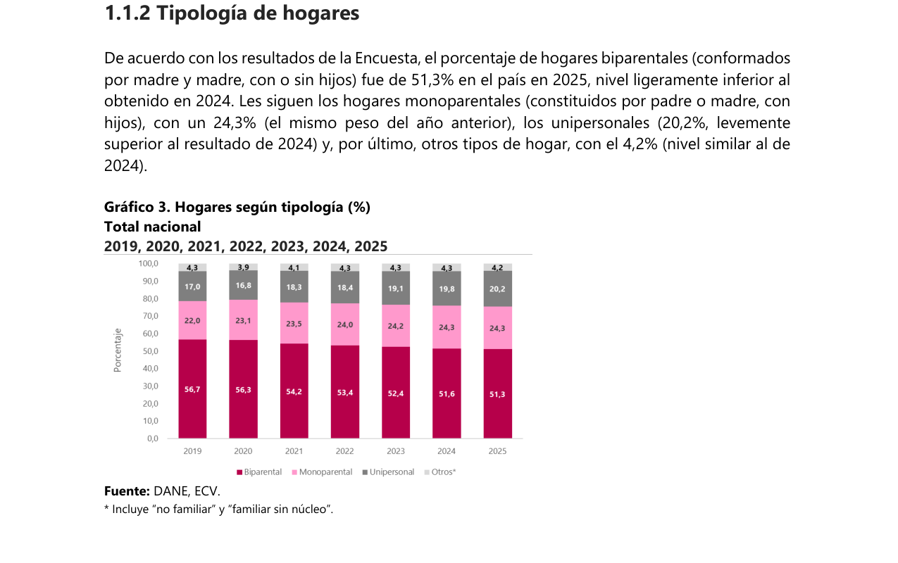
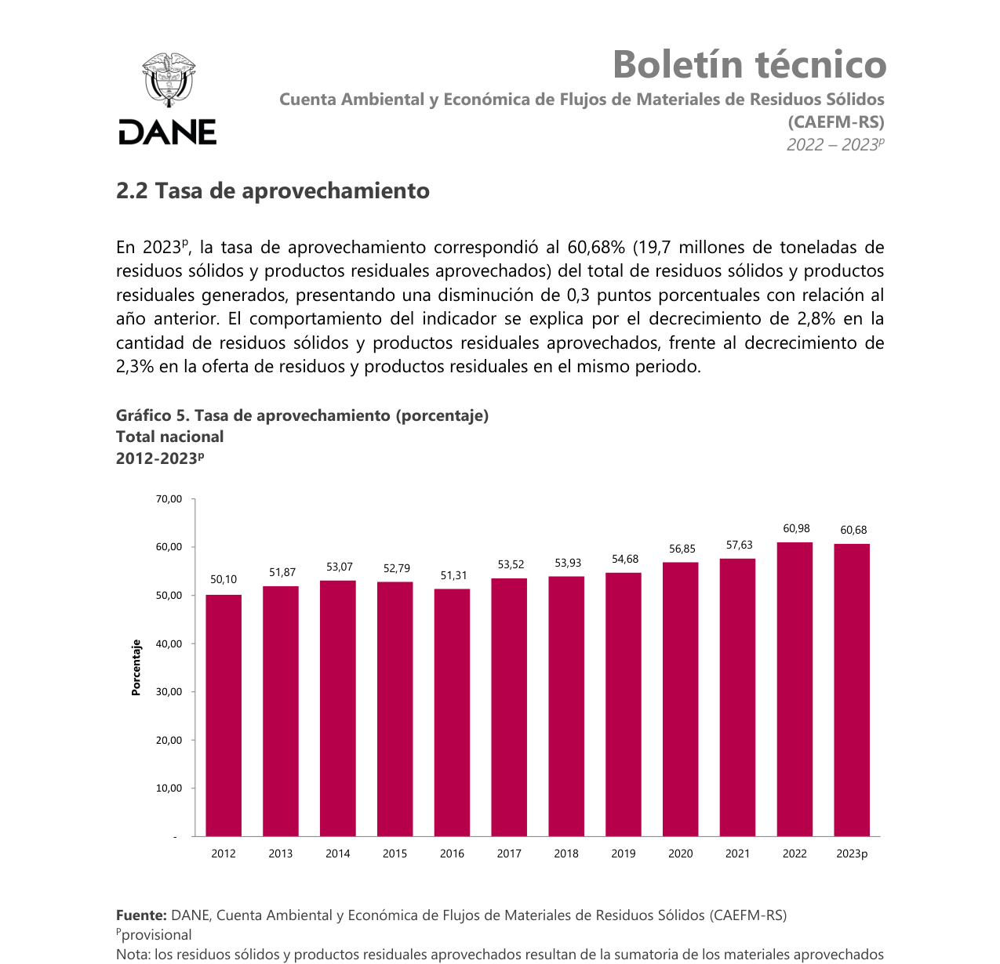
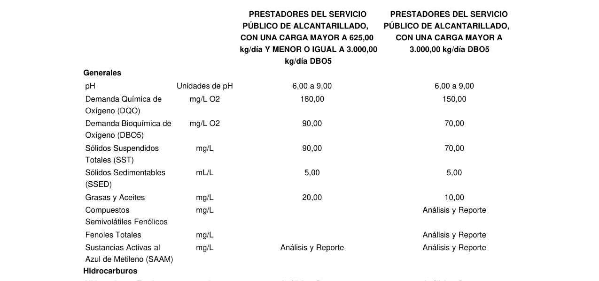
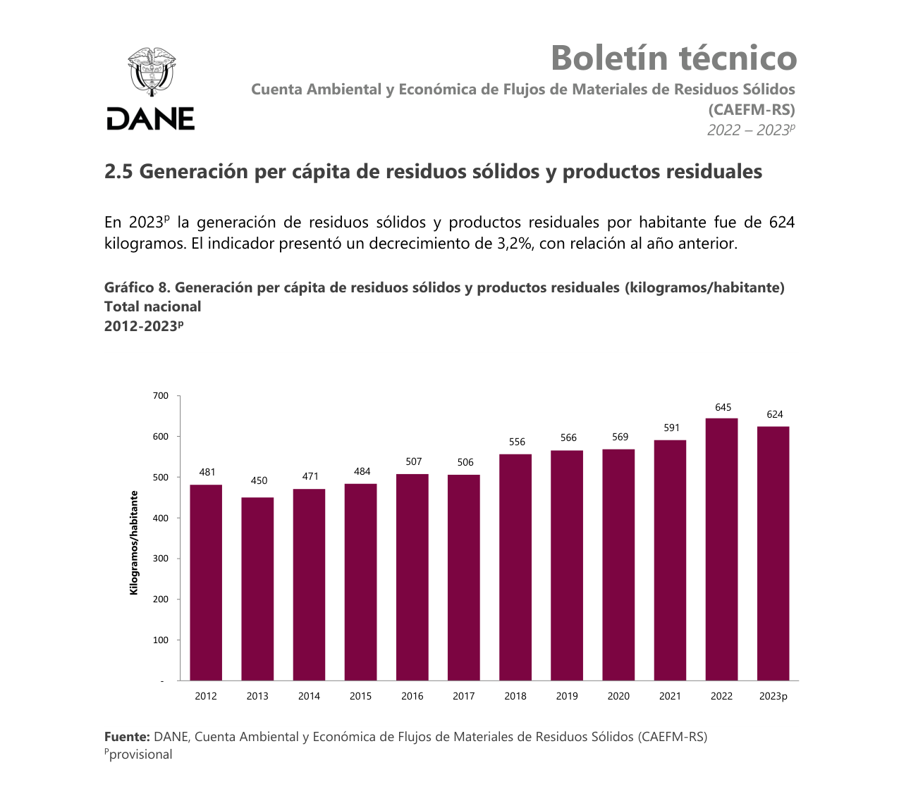

2.2.1 Location of Retailing and Manufacturing
1. Introduction
David's Table 3-5 lists "location of retailing, manufacturing, and service businesses" as a social variable in its own right — where a service business physically sits determines who can reach it, which is a demographic question as much as a real-estate one. In Colombia's QSR industry, this variable plays out on two fronts: which parts of a city concentrate demand, and how kitchens are physically organized to reach that demand efficiently.
2. Data
Out-of-Home Food Consumption, Market Share by City
Raddar — share of Colombia's out-of-home food consumption market by city; these three alone account for over half the national market
Location Cost & Sales Impact
Of total sales for established chains in mall food courts
Of Bogotá's Calle 72 corridor under redevelopment into a Metro-connected commercial node (Decreto 242 de 2026)
-
2023
Bogotá, Cali and Medellín concentrate over half the out-of-home food market
Raddar's market data puts Bogotá at 29.6% national share of out-of-home food consumption, Cali at 12.0% and Medellín at 10.9% — three cities alone accounting for more than half of where Colombians eat outside the home.
-
2026
Transit-connected corridors emerge as new commercial real estate
Bogotá's Decreto 242 de 2026 formalized the redevelopment of the Calle 72 corridor around the new Metro Line 1 and TransMilenio station (opened Aug 22, 2026) into a mixed-use commercial and mobility node — a live, ongoing example of how transit access is reshaping where food-service retail locates in the city.
Location models available to a QSR operator in Bogotá
| Location Model | Characteristics |
|---|---|
| Mall Food Court | Highest cost per square meter, but constant footfall; can represent up to 40% of total sales for established chains that use it. |
| High-Street / Transit Corridor | Moderate rent, visibility and walk-in demand from daily commuter and residential flow; requires competing directly with other storefronts on the same corridor. The Calle 72 Metro corridor redevelopment is a current example of this model gaining ground in Bogotá. |
| Residential / Intermediate-City Expansion | Replicates high-street models in high-density residential areas (e.g. northern Bogotá, Chía, Cajícá) to cut consumer travel time. |
Industry example: a campus-adjacent transit corridor
A recurring pattern in this industry is quick-service operators colocating retailing and manufacturing at a single storefront positioned on the access corridor of a large, closed-campus institution — capturing walk-up demand while also using the same kitchen to dispatch delivery orders nearby. A concrete illustration of this pattern is the Autopista Norte corridor at Km 7, Chía, directly outside Universidad de La Sabana's Campus del Puente del Común — the daily entry/exit point for the university's student population.
| Function | How the Pattern Plays Out at This Corridor |
|---|---|
| Retailing (where a customer buys) | A storefront at the Autopista Norte Km 7 access corridor, immediately outside Universidad de La Sabana's main gate — the same logic as a computer-repair shop clustering at Unilago: the store sits exactly where the target customer already has to pass. |
| Manufacturing (where it is produced) | A back-of-house kitchen at that same storefront, sized to dispatch both walk-in and delivery orders within a 3–5 km radius of the Km 7 corridor. |
| Reach — on-campus (closed system) | The university runs its own internal dining network of 15 points (Embarcadero, Punto Sándwich, Punto Wok, Restaurante Arcos, among others) exclusively for the campus — captive demand an off-campus operator cannot deliver into, only intercept before or after campus hours. |
| Reach — off-campus (addressable) | Fontanar shopping center (~2.5 km via Chía-Cajicá), Centro Chía, and the residential corridor along Autopista Norte back toward Bogotá all sit within a realistic delivery radius from the Km 7 site. |
3. Opportunities and Threats
Opportunity
- Large closed-campus institutions such as universities concentrate a captive student population that their own internal dining networks cannot fully serve outside operating hours — an industry-wide opportunity for quick-service operators positioned at the campus's access corridor, independent of any single storefront.
4. Analysis
A university's own dining network (Embarcadero, Punto Sándwich, Punto Wok and the rest, in the Universidad de La Sabana example) is a real threat any operator positioned at that corridor must account for: it is a closed, subsidized system students already have access to without leaving campus, so an off-campus storefront cannot compete for that captive traffic directly. What it can capture is the traffic the closed system does not serve — students and staff arriving before opening hours, leaving after the last on-campus service closes, or simply choosing to eat off campus — which is exactly the audience a storefront positioned at the campus access corridor is built to intercept.
The same pattern also solves the manufacturing/distribution side of this variable concretely: rather than an abstract "3–5 km delivery radius," a kitchen at a corridor like Km 7 has named, reachable destinations — residential areas along the corridor, a nearby shopping center, and a town center — giving an operator a defined, walkable-to-drivable distribution footprint from day one instead of a generic urban-corridor assumption. The broader city-level picture (Bogotá, Cali and Medellín concentrating over half the national out-of-home market) and the Calle 72 example both point the same direction: transit- and institution-adjacent corridors are where this industry's retail and delivery-reach decisions increasingly converge.
5. Bibliography
2.2.2 Lifestyle
1. Introduction
"Lifestyles" is one of David's core social variables (Table 3-5), because how people choose to spend their time and money reshapes demand for entire categories of service businesses. In the specific context of Bogotá's QSR industry, three lifestyle trends matter most: less time for home cooking, a rising share of people living alone, and a 2026 shift toward more cautious discretionary spending.
2. Data
Single-Person Households in Colombia
DANE Encuesta de Calidad de Vida — projected to reach 24% by 2030
Price vs. Health Consciousness
Industry-cited estimate; not confirmed against a specific survey methodology

-
2020
Single-person households at 16.8%
DANE's quality-of-life survey recorded 16.8% of Colombian households as single-person households in 2020.
-
2025
Rises to 20.2% — 1 in 5 households
By 2025, single-person households reached 20.2% (one in five), a demographic shift that favors individual-portion, fast-turnaround meals over family-style cooking; DANE projects 24% by 2030.
-
2026
Consumers pull back on delivery spending
A 2026 Portafolio consumer-trends report found 58% of young Colombian consumers plan to spend less on grocery/food delivery this year, with 64% focusing spending only on cooking essentials — a more cautious posture than in prior years.
Lifestyle drivers affecting the QSR industry
| Driver | Data Point |
|---|---|
| Fast-food frequenting | 53% of Colombian consumers frequent fast-food establishments, above the general Latin American average. |
| Price sensitivity | 49% say price is a decisive factor when choosing where to eat. |
| Health consciousness | An estimated 88% report being more cautious about their physical health, pushing demand for lighter, customizable menu options (figure not confirmed against a specific survey methodology). |
| Household structure | 20.2% of households are single-person (2025), favoring individual-portion, fast-turnaround meals. |
| 2026 spending caution | 58% of young consumers plan to spend less on delivery; 64% will prioritize only essentials. |
3. Opportunities and Threats
Threat
- In 2026, 58% of young Colombian consumers say they plan to spend less on delivery orders and 64% will prioritize only essential purchases — a pullback in exactly the discretionary quick-service spending this industry depends on for its delivery channel.
4. Analysis
The underlying demographic trend (more people living alone, needing fast individual meals) still favors the QSR format, but the 2026 spending data shows that trend running against a more cautious, budget-conscious consumer mood this year specifically. The strategic implication for operators is to lean on the in-store/walk-up channel — since this 2026 pullback is specifically about delivery spend, not eating out — rather than assuming delivery volume will grow at the same pace the underlying demographics suggest.
Taken together, the five drivers above describe a market that is large (53% already frequent fast food) but internally divided along two tensions: price versus health, and convenience versus caution. Facing economic pressure and the current cost of living, consumer lifestyles split between the search for reasonable prices and greater caution regarding physical wellbeing, which forces the industry to diversify menus with lighter alternatives and balanced portions without sacrificing the speed characteristic of the QSR model — and to do so at a moment when discretionary delivery spending specifically, not restaurant visits generally, is under pressure.
5. Bibliography
2.2.3 Recycling
1. Introduction
"Recycling" appears explicitly in David's Table 3-5 as a social/environmental variable, reflecting how consumer and regulatory expectations about waste have become a standard part of running any food-service business, not an optional extra. In Colombia, this expectation is now written into law: Ley 2232 de 2022 entered into force on July 7, 2022 (Art. 35) and sets a phased, dated reduction and recycled-content schedule for single-use plastics — with a first set of banned product categories effective July 7, 2024 and a second, wider set effective July 7, 2030 (Art. 6) — that already applies across the industry as of 2026, not as a future requirement.
2. Data
Ley 2232/2022 Timeline
MinAmbiente — Ley 2232 de 2022 phase-in schedule; all past milestones remain in force through 2026
PET Recycled-Content Requirement (since 2025, still in force)
Bottled water PET
Other beverage PET

-
Jul 7, 2022
Ley 2232 de 2022 enters into force — still in force today
Colombia's single-use plastics law took effect on the date of its promulgation (Art. 35), setting July 7, 2024 and July 7, 2030 as the two compliance deadlines for specific product bans (Art. 6), and remains in force and fully applicable as of 2026.
-
Jul 7, 2024
First ban takes effect (six categories) — still in force today
Checkout bags, wrap-around bags for newspapers/magazines/produce, drink stirrers and straws, balloon sticks, and cotton-swab sticks can no longer be produced or sold (Art. 5–6), a prohibition that remains in effect through 2026.
-
2025 — still in force today
Recycled-content minimums already apply
Since 2025, PET bottled-water containers must contain at least 50% post-consumer or post-industrial recycled material, and other PET beverage containers at least 20% — a requirement packaging suppliers to this industry must already meet in 2026, not prepare for, and one that continues to apply going forward.
-
Jul 7, 2030
Second, wider ban takes effect
A second set of single-use plastic categories most relevant to food service — takeout containers, cutlery, plates, cups, and food-wrapping film, among others — can no longer be placed on the market (Art. 6), as part of MinAmbiente's stated goal of reaching 100% reusable, recyclable, or compostable single-use plastics by 2030.
Ley 2232/2022 compliance schedule
| Milestone | Requirement |
|---|---|
| Jul 7, 2022 (still in force) | Law enters into force (Art. 35); Jul 7, 2024 and Jul 7, 2030 set as the two compliance deadlines (Art. 6). Remains fully in force through 2026. |
| Jul 7, 2024 (still in force) | First set of banned categories takes effect: checkout bags, wrap-around bags, drink stirrers/straws, balloon sticks, cotton-swab sticks, among others. Ban remains active through 2026. |
| 2025 (still in force) | PET bottled-water containers: ≥50% recycled content. Other PET beverage containers: ≥20%. Requirement continues to apply through 2026. |
| Jul 7, 2030 (upcoming) | Second set of banned categories takes effect: takeout containers, cutlery, plates, cups, food-wrapping film, among others — toward MinAmbiente's goal of 100% reusable/recyclable/compostable single-use plastics. |
3. Opportunities and Threats
Threat
- The 2025 recycled-content minimums are already in force, and the Jul 2030 ban — covering takeout containers, cutlery, plates, cups, and wrapping film — is only four years away, so compliant packaging must be sourced from a business's very first purchase order, not retrofitted later.
4. Analysis
Because the law is already active and phased by fixed dates rather than a single future deadline, the compliance burden falls on any new entrant from day one of operation. The practical implication for the industry is to select a packaging supplier already certified against the 2025 recycled-content minimums during initial sourcing, turning what could be a late, costly retrofit into a one-time setup decision.
The schedule above also signals where regulatory attention is heading next: having already moved from a general reduction mandate to specific recycled-content percentages, the direction of travel toward the 2030 target strongly suggests packaging suppliers who are not yet certified today will face rising compliance costs of their own, which are likely to be passed through to buyers — making an early relationship with an already-compliant supplier a cost-avoidance decision, not just a sustainability one.
5. Bibliography
2.2.4 Pollution Control
1. Introduction
"Pollution control" is listed in David's Table 3-5 alongside energy conservation as a social/environmental variable that increasingly determines whether a service business can legally operate in a dense urban setting. For a kitchen-based service business, this means air, odor and wastewater discharge, not manufacturing emissions.
2. Data
Discharge & Maintenance Thresholds
Max. fats & oils in sewage discharge (2015)
Grease-trap capacity that triggers maintenance

-
2013 — still in force today
Resolución 1541 sets odor-immission standards
The Ministry set permissible ambient odor levels (measured as the 98th percentile of modeled European odor units per year) and a complaint procedure: if a complaint against a kitchen is validated, the operator must submit a PRIO (Plan para la Reducción del Impacto por Olores Ofensivos) describing the good practices or technologies it will apply — the resolution does not itself mandate specific equipment like extraction hoods or carbon filters, and remains the applicable standard in 2026.
-
2015 — still in force today
Resolución 0631 caps fats & oils discharge at 20 mg/L
The Ministry of Environment set the maximum permissible fats-and-oils concentration in sewage discharge at 20 mg/L, requiring properly sized grease traps — a limit that continues to apply as of 2026.
-
2021 — still in force today
Resolución 799 updates sector technical rules
The Technical Sector Regulation (RAS) was modified, reinforcing mandatory grease-trap maintenance once a unit reaches 75% of its retention capacity, a requirement still in effect today.
Pollution-control regulations applicable to a QSR kitchen
| Regulation | Requirement |
|---|---|
| Resolución 1541/2013 (odor) | Ambient odor-immission standard (98th percentile); if a complaint is validated, the operator must submit and implement a PRIO (odor-impact reduction plan) — equipment such as extraction hoods and carbon filters is a common way to comply, not a named requirement of the resolution itself. |
| Resolución 0631/2015 (discharge) | Maximum 20 mg/L of fats and oils in sewage discharge; requires a properly sized grease-separator unit. |
| Resolución 799/2021 (RAS update) | Mandatory grease-trap maintenance before reaching 75% of retention capacity. |
| Municipal noise regulation | Maximum decibel limits for drive-through and delivery-motorcycle traffic during extended operating hours. |
3. Opportunities and Threats
Threat
- Odor complaints can trigger a mandatory PRIO (odor-reduction plan), and a correctly sized grease trap is a mandatory equipment cost — both should be budgeted for before opening, not treated as optional upgrades to add later.
4. Analysis
Because these regulations have progressively tightened requirements over 2013, 2015 and 2021 — and now extend beyond air and water discharge to noise from delivery traffic — pollution-control equipment is a fixed, well-established cost that belongs in the initial infrastructure budget of any new kitchen rather than a contingency. Budgeting for it upfront also avoids the closure risk that catches informal competitors who skip it.
The four-part table above shows that compliance is not a single checkbox but an ongoing operating discipline: odor and discharge controls are largely fixed at installation, but grease-trap maintenance and noise management are recurring obligations that must be scheduled into routine operations, not treated as one-time capital expenses.
5. Bibliography
2.2.5 Waste Management
1. Introduction
"Waste management" sits alongside recycling in David's Table 3-5 as a distinct social variable: how much waste a business generates, and where it goes, is now a factor customers and regulators both track. For a kitchen-based service business, the relevant data is the volume and composition of what a location actually throws away, and how the country's recovery infrastructure has evolved to handle it.
2. Data
National Recycling Rate Over Time
Share of urban solid waste recovered nationally (DANE) — steady improvement, still a minority of total waste
Waste Composition at Fast-Food Outlets
Industry-cited estimate; no specific source could be confirmed for this exact split

-
2019
National recycling rate: 11.82%
Colombia recovered 11.82% of solid waste nationally, per DANE's Cuenta Ambiental y Económica de Flujos de Materiales de Residuos Sólidos.
-
2021
Rises to 13.81%
The national recovery rate climbed roughly 2 percentage points to 13.81%, with Bogotá accounting for a large share of recovered tonnage.
-
2022
Reaches 14.6%
The national rate rose further to an estimated 14.6% — showing steady progress but still a minority of total solid waste generated.
Waste streams a QSR kitchen must manage
| Waste Stream | Management Consideration |
|---|---|
| Organic waste (72% of total) | Food scraps, prep losses and consumption waste requiring daily collection and rigorous sanitary control to prevent contamination and pests. |
| Dry / packaging waste (28% of total) | Delivery cardboard, wax paper, coated cups and single-use plastics; the fraction most directly affected by Ley 2232/2022. |
| Used cooking oil (UCO) | Industrial fryers generate significant UCO volumes; a single liter can contaminate up to 1,000 liters of water if not handled through an authorized environmental manager. |
3. Opportunities and Threats
Threat
- Even after rising from 11.82% (2019) to an estimated 14.6% (2022), the national recycling rate signals still-weak public waste infrastructure to lean on outside Bogotá's formal system, so proper disposal and used-cooking-oil traceability largely remain an operator's own responsibility.
4. Analysis
The steady rise in the national recycling rate is real, but it started from a very low base and Bogotá still accounts for a disproportionate share of the total — meaning a QSR business benefits from being in the best-served part of a still-weak national system. The estimated 72%/28% organic-to-packaging split at fast-food outlets makes it straightforward to plan dedicated composting and used-cooking-oil collection partnerships in a city where that infrastructure genuinely exists, in a way it would not in a smaller Colombian city.
Used cooking oil deserves particular attention within this variable: because a single liter can contaminate up to 1,000 liters of water, and a significant share of micro-businesses and informal fast-food outlets still face traceability gaps in handing this byproduct over to authorized managers, contracting a certified UCO collector from day one is both an environmental obligation and a low-cost way to differentiate from informal competitors who skip it.